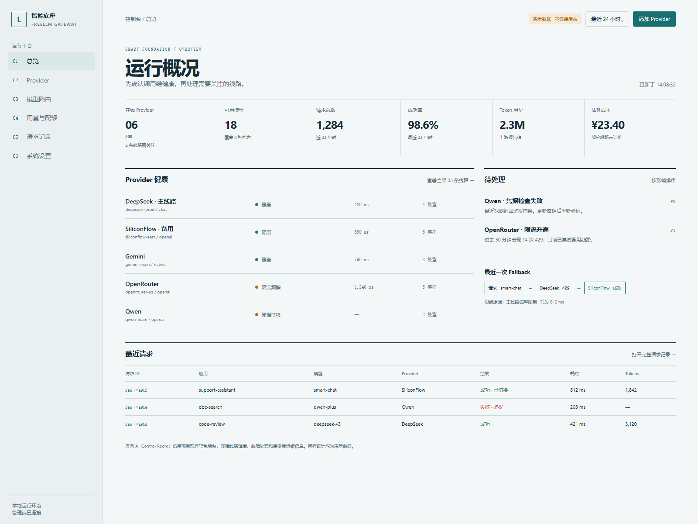
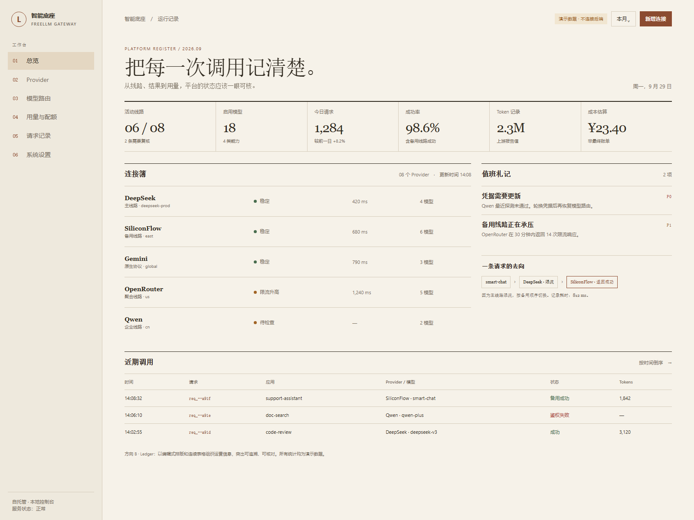
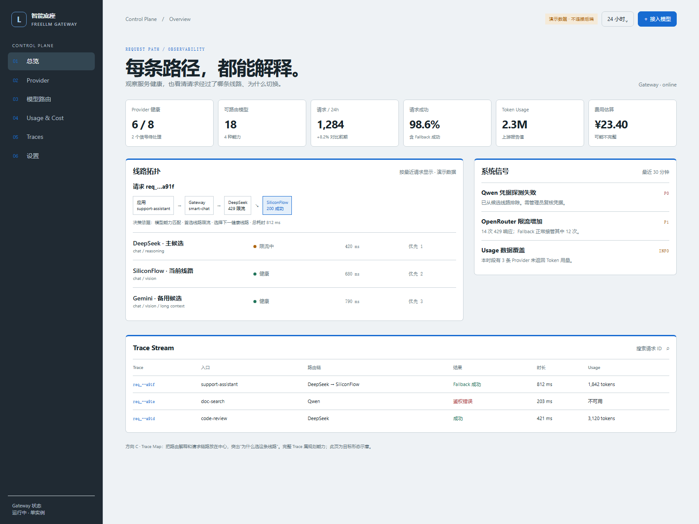

A · Control Room
沿用项目现有轻色后台。Provider 健康、待处理故障和近期请求优先，适合日常运维。

打开交互原型 →三个方向使用同一组产品能力和演示场景，分别探索运维优先、账本式可读性与请求链路解释。数据为静态演示，不连接后端。
沿用项目现有轻色后台。Provider 健康、待处理故障和近期请求优先，适合日常运维。

打开交互原型 →温纸色与编辑式排版。以线路清单和连续记录为主，突出成本、状态与记录核对。

打开交互原型 →深色侧栏与结构化路径图。把路由判断过程放在中心，突出“为什么选这条线路”。

打开最终交互原型 →